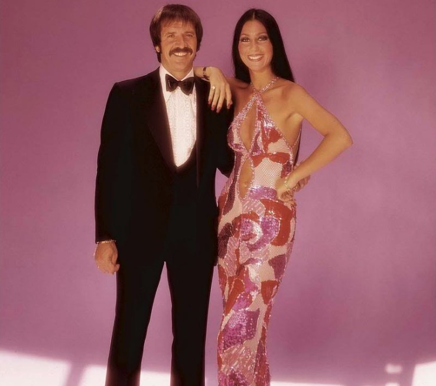

At age 16, Cher dropped out of school, left her mother's house, and moved to Los Angeles with a friend. She took acting classes and worked to support herself, dancing in small clubs along Hollywood's Sunset Strip and introducing herself to performers, managers, and agents.[14] According to Berman, "[Cher] did not hesitate to approach anyone she thought could help her get a break, make a new contact, or get an audition."[15] Cher met performer Sonny Bono in November 1962 when he was working for record producer Phil Spector.[15] Cher's friend moved out, and Cher accepted Sonny's offer to be his housekeeper.[16] Sonny introduced Cher to Spector, who used her as a backup singer on many recordings, including the Ronettes' "Be My Baby" and the Righteous Brothers' "You've Lost That Lovin' Feelin'".[17] Spector produced her first single, "Ringo, I Love You", which Cher recorded under the name Bonnie Jo Mason.[18] The song was rejected by many radio stations programmers as they thought Cher's deep contralto vocals were a man's vocals; therefore, they believed it was a male homosexual singing a love song dedicated to the Beatles drummer Ringo Starr. [19]
[Cher] did not hesitate to approach anyone she thought could help her get a break, make a new contact, or get an audition.
Cher and Sonny became close friends, eventual lovers, and performed their own unofficial wedding ceremony in a hotel room in Tijuana, Mexico, on October 27, 1964.[17][20] Although Sonny had wanted to launch Cher as a solo artist, she encouraged him to perform with her because she suffered from stage fright, and he began joining her onstage, singing the harmonies. Cher disguised her nervousness by looking at Sonny; she later commented that she sang to the people through him.[21] In late 1964, they emerged as a duo called Caesar & Cleo, releasing the poorly received singles "Do You Wanna Dance?", "Love Is Strange", and "Let the Good Times Roll".[22]
Cher signed with Liberty Records' Imperial imprint in the end of 1964, and Sonny became her producer. The single "Dream Baby", released under the name "Cherilyn", received airplay in Los Angeles.[18] Imperial encouraged Cher to work with Sonny on her second solo single for the label, a cover version of Bob Dylan's "All I Really Want to Do".[18] It peaked at number 15 on the US Billboard Hot 100 in 1965.[23] Meanwhile, the Byrds had released their own version of the same song. When competition on the singles charts started between Cher and the Byrds, the group's record label began to promote the B-side of the Byrds' single. Roger McGuinn of the Byrds commented, "We loved the Cher version ... We didn't want to hassle. So we just turned our record over."[24] Cher's debut album, All I Really Want to Do (1965), reached number 16 on the Billboard 200;[25] it was later described by AllMusic's Tim Sendra as "one of the stronger folk-pop records of the era".[26]